측량및지형공간정보기사 (2015-05-31 기출문제)
1과목: 측지학 및 위성측위시스템
1. 측지선(geodesic)에 대한 설명으로 옳지 않은 것은?
- 지구면상 두 점을 잇는 최단거리가 되는 곡선을 측지선이라 한다.
- 타원체상 곡선과 측지선의 길이의 차는 극히 미소하여 일반적으로 무시할 수 있다.
- 측지선은 미분기하학으로 구할 수 있으나 직접 관측하여 구하는 것이 더욱 정확하다.
- 측지선은 두 개의 평면곡선의 교각을 2 : 1로 분할하는 성질이 있다.
(정답률: 55%)

2. 관측점들의 고도차에 존재하는 물질의 인력이 중력에 미치는 영향을 보정하는 것은?
- 계기보정
- 고도보정
- 지형보정
- 부게보정
(정답률: 74%)
3. 국제 횡 메르카토르 좌표계(UTM 좌표계)에 대한 설명으로 옳지 않은 것은?
- 지구를 6° 경도대로 나누어 이 경도대마다 각각 투영한 도법이다.
- 극 지역에는 따로 UPS 좌표계를 사용한다.
- 왜곡 없는 투영이 가능하다.
- 중앙경선상의 축척계수를 0.9996으로 하면, 중앙경선에서 동서로 각각 약 180km 떨어진 곳에서 축척계수가 1.0000이 된다.
(정답률: 74%)
4. GPS 방송궤도력에서 제공하는 정보로 옳은 것은?
- 위성과 수신기 사이의 거리
- 위성의 위치정보
- 대기 중 습도정보
- 수신기의 시계오차
(정답률: 69%)
5. 특정 지점의 지오이드고가 -10m이고 타원체고가 10m일 때 정표고는? (단, 연직선편차는 0으로 가정한다.)
- -20m
- 0m
- 10m
- 20m
(정답률: 82%)
6. 반지름 6,400km인 구면상에서 구면삼각형의 면적이 1,429,772km2일 때 구과량은?
- 1°
- 2°
- 3°
- 4°
(정답률: 74%)
7. 어느 지점의 자침 편각이 W 6.5°이고 복각은 N 57°일 때 설명으로 옳은 것은?
- 이 지점에서 진북은 자침의 N극보다 서쪽으로 6.5°방향이다.
- 이 지점에서 진북은 자침의 N극보다 동쪽으로 6.5°방향이다.
- 이 지점에서 자침의 N극은 수평선보다 6.5° 기운다.
- 이 지점에서 자침의 S극은 수평선보다 6.5° 기운다.
(정답률: 68%)
8. 다음 중 중력보정에 해당되지 않는 것은?
- 조석보정
- 수평보정
- 위도보정
- 고도보정
(정답률: 58%)
9. 지자기측량에 대한 설명 중 옳지 않은 것은?
- 편각이란 지자기의 방향과 자오선이 이루는 각이다.
- 복각이란 지자기의 방향과 수평면이 이루는 각이다.
- 수평분력이란 지자기의 수평면에 대한 성분이다.
- 지자기의 극은 지구의 극과 완전히 일치한다.
(정답률: 75%)
10. 타원체에 대한 설명으로 옳지 않은 것은?
- 회전타원체는 한 타원체의 지축을 중심으로 회전하여 생긴 입체타원체이다.
- 지구타원체는 지오이드를 회전시켜 지구의 형으로 규정한 타원체이다.
- 준거타원체는 어느 지역의 측지측량계의 기준이 되는 타원체이다.
- 국제타원체는 전 세계적으로 측지측량계를 통일하기 위한 지구타원체이다.
(정답률: 56%)
11. 우리나라의 지형도에서 사용하고 있는 평면좌표의 투영법은?
- 등각투영
- 등적투영
- 등거투영
- 복합투영
(정답률: 79%)
12. 인공위성과 관측점 간의 거리를 결정하는데 사용되는 주요 원리는?
- 다각법
- 세차운동의 원리
- 음향관측법
- 도플러 효과
(정답률: 71%)
13. 기준점 측량과 같이 매우 높은 정밀도를 필요로 할 때 사용하는 방법으로서 두 개 또는 그 이상의 수신기를 사용하여 보통 1시간 이상 관측하는 GPS 현장관측방법은?
- 정지측량(static 관측방법)
- 이동측량(kinematic 관측방법)
- 신속정지측량(rapid static 관측방법)
- RTK(Real Time Kinematic)
(정답률: 85%)
14. 고정밀 GPS 측위에서 이중 주파수 관측데이터를 사용하는 주요 이유는?
- 다중경로의 최소화
- 대류권 지연의 최소화
- 전리층 효과의 최소화
- 수신기 시간오차의 최소화
(정답률: 73%)
15. 하나의 관측방정식에서 다른 관측방정식을 빼는 차분법 중 사이클 슬립(cycle slips)의 문제를 가장 잘 해결할 수 있는 GPS 측량방법은?
- 단순 차분
- 2중 차분
- 3중 차분
- 4중 차분
(정답률: 71%)
16. 우주에서 GPS를 이용한 단독측위를 수행할 경우 틀린 설명은?
- 추적데이터는 3차원 좌표로 얻어진다.
- 추적데이터는 지상국 상공을 지날 때 일괄적으로 다운로드한다.
- 우주 비행체에서 지상의 지원 없이 독립적으로 궤도를 추적할 수 있다.
- GPS 위성의 궤도 부근 혹은 바깥부분에서도 높은 정확도를 확보하여 사용 가능하다.
(정답률: 52%)
17. L1 반송파에 탑재된 신호가 아닌 것은?
- P코드
- C/A코드
- 항법메시지
- CM코드
(정답률: 76%)
18. DGPS 측위에 대한 설명 중 틀린 것은?
- 위치를 알고 있는 기지점과 위치를 모르는 미지점에서 동시에 관측한다.
- 동시에 수신 가능한 위성이 최소한 4개가 필요하다.
- 기지점과 미지점의 거리가 길수록 측위정확도가 높다.
- 기지점과 미지점에서의 오차가 유사할 것이라는 가정을 이용한다.
(정답률: 76%)
19. 성과표에서 삼각점 A에 대한 진북방향각이 0°16′42″일 때 시준점 B에 대한 방향각이 75°32′51″라면 AB 측선의 방위각은?
- 75°16′09″
- 75°49′33″
- 255°16′09″
- 255°49′33″
(정답률: 66%)
20. GPS의 오차에 대한 설명으로 틀린 것은?
- GPS의 오차에는 위성시계오차, 대기굴절오차, 수신기 오차 등이 있다.
- 위성의 위치오차는 위성의 배치상태의 오차를 말하며 측점의 좌표계산에는 영향을 주지 않는다.
- 안테나의 높이 측정오차와 구심오차는 안테나의 중심과 위상중심의 차이에서 발생하는 오차를 말한다.
- 위성의 기하학적 배치상태가 정밀도에 어떻게 영향을 주는가를 추정할 수 있는 하나의 척도로 DOP(Dilution Of Precision)를 사용한다.
(정답률: 72%)
2과목: 응용측량
21. 그림과 같은 토지의 한 변 BC=50m상의 고정점 D와 AC=46m상의 점 E를 연결하여 △ABC의 면적을 2등분(m : n = 1 : 1)하기 위한 AE의 길이는?
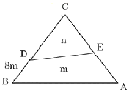
- 18.6m
- 20.8m
- 21.2m
- 27.8m
(정답률: 47%)
22. 그림과 같은 5각형 토지 ABCDE를 동일 면적의 사각형 토지로 만들기 위해 DC의 연장선 상에 경계점 F를 설치하고자 한다.AC=40m, BC=25m, ∠ACB=30°, ∠BCF=80°라 할 때 CF의 거리는?
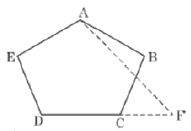
- 12.7m
- 12.9m
- 13.1m
- 13.3m
(정답률: 34%)
23. 곡선시점의 위치가 No.120+12.50m이고, 반지름이 350m인 단곡선상 No.122 중심말뚝에 대한 편각은? (단, 중심말뚝 간의 거리는 20m이다.)(오류 신고가 접수된 문제입니다. 반드시 정답과 해설을 확인하시기 바랍니다.)
- 0°36′50″
- 1°38′13″
- 2°15′03″
- 3°53′16″
(정답률: 23%)
24. 터널공사에서 시공 중에 주로 실시하는 측량은?
- 지형 측량
- 변위 측량
- 터널 내 측량
- 완공 측량
(정답률: 63%)
25. 해양에서 수심측량을 할 경우 음향측심 장비로부터 취득한 수심의 보정 방법이 아닌 것은?
- 음속보정
- 조석보정
- 흘수보정
- 방사보정
(정답률: 57%)
26. 하천 수위 중 제방의 축조, 교량의 건설 또는 배수공사 등 치수목적에 주로 이용되는 수위는?
- 최저수위
- 평균최고수위
- 평균수위
- 평수위
(정답률: 57%)
27. 경관평가에 있어서 시준선과 시설물 축선이 이루는 수평시각()의 범위로 시설물 전체의 형상을 인식할 수 있고, 경관의 주제로서 적당한 경관을 얻을 수 있는 범위는?
- 0° ＜ θ ≤5°
- 5° ＜ θ ≤10°
- 10° ＜ θ ≤30°
- 50° ＜ θ ≤60°
(정답률: 56%)
28. 그림과 같은 단면의 면적은?
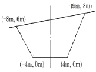
- 78m2
- 80m2
- 87m2
- 90m2
(정답률: 52%)
29. 다각측량에 의하여 결정한 터널입구의 좌표값이 다음과 같다. 터널의 중심선 AB의 방향각 및 수평거리 은?
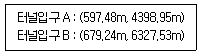
- =87°34′21″, =1930m
- =87°34′21″, =1832m
- =85°32′23″, =1930m
- =85°32′23″, =1832m
(정답률: 54%)
30. 터널측량에 관한 설명으로 옳지 않은 것은?
- 터널측량을 크게 나누어 터널 외 측량, 터널 내 측량, 터널 내⋅외 연결측량으로 구분한다.
- 터널 내에서 중심말뚝을 콘크리트 등을 이용하여 견고하게 만든 것을 자이로(gyro)라고 한다.
- 터널 내 측량의 측점은 보통 천장에 설치한다.
- 터널 내의 측량에는 기계의 십자선과 표척 등에 조명이 필요하다.
(정답률: 68%)
31. 클로소이드(clothoid) 곡선에 대한 설명으로 옳지 않은 것은?
- 완화곡선의 일종이다.
- 곡률이 곡선의 길이에 비례한다.
- 고속도로의 완화곡선에 적합하다.
- 철도의 종단곡선 설치에 가장 효과적이다.
(정답률: 61%)
32. 노선측량의 순서로 옳은 것은? (단, A : 실시설계측량, B : 공사측량, C : 도상계획 및 답사, D : 계획조사측량)
- C→B→D→A
- B→C→D→A
- D→A→B→C
- C→D→A→B
(정답률: 67%)
33. 수위관측소의 설치장소로 적당하지 않은 곳은?
- 잠류(潛流), 역류(逆流)가 없는 곳
- 유속이 너무 빠르거나 느리지 않은 곳
- 직선의 상류에서 곡선의 하류로 연결되는 곳
- 구조물에 의하여 수위에 영향을 받지 않는 곳
(정답률: 65%)
34. 곡선반지름 200m, 레일간격 1,067mm일 때 설계속도 100km/h에 대한 캔트(cant)는? (단, 중력가속도 g=9.8m/s2)
- 12cm
- 22cm
- 32cm
- 42cm
(정답률: 43%)
35. 교각 I=32°36′인 2개의 선간에 최소반지름 Ro=180m의 렘니스케이트(Lemniscate) 곡선을 측설하려고 할 때, 접선길이는?
- 101.803m
- 102.400m
- 104.164m
- 1⑤.400m
(정답률: 17%)
36. 노선측량에서 단곡선의 기본 공식으로 틀린 것은? (단, R : 곡선반지름, I° : 교각)
- 곡선길이

- 중앙종거

- 장현

- 외할

(정답률: 59%)
37. 표고와 면적을 측량한 결과가 그림과 같았다면 전체 토공량은? (단, 각 구역의 크기는 동일하고, 기준면의 표고는 0m이다.)
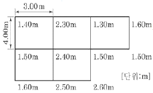
- 110m3/
- 114m3/
- 119m3/
- 120m3/
(정답률: 54%)
38. 각 구간의 평균유속이 표와 같은 때, 그림과 같은 단면을 갖는 하천의 유량은?
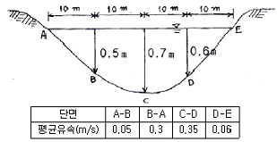
- 4.38m3/s
- 4.83m3/s
- 5.38m3/s
- 5.83m3/s
(정답률: 43%)
39. 하천측량에서 평균유속을 3점법으로 구하고자 할 때의 공식으로 옳은 것은? (단, Vm=평균유속, V0.2, V0.4, V0.6, V0.8=수면에서 수심의 20%, 40%, 60%, 80% 되는 곳의 유속)
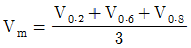
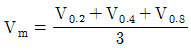
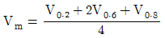
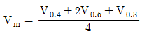
(정답률: 64%)
40. 매개변수 A=150m인 클로소이드에 접속되는 원곡선의 반지름이 250m라고 할 때 단위 클로소이드 길이()는?
- 0.571000
- 0.600000
- 1.258000
- 1.666667
(정답률: 48%)
3과목: 사진측량 및 원격탐사
41. 내부표정에 대한 설명 중 옳지 않은 것은?
- 3차원 Similarity(유사성) 변환을 사용한다.
- 내부표정을 수행하면, 사진상의 모든 점의 위치를 사진좌표계로 표현할 수 있다.
- 기계좌표와 사진좌표계와의 기하학적 관계를 수립한다.
- 사진상에 나타난 사진지표(Fiducial Marks)를 측정해야 한다.
(정답률: 38%)
42. 초점거리가 150mm이고 사진축척이 1 : 10,000인 수직 항공사진에서 탑(Tower)의 높이를 계산하려고 한다. 주점에서 탑의 밑부분까지 거리가 9cm, 탑의 꼭대기까지 거리가 10cm일 때 이 탑의 실제 높이는?
- 10m
- 15m
- 100m
- 150m
(정답률: 32%)
43. 항공사진 카메라의 초점거리 150mm, 촬영경사 4°로 평지를 촬영하였다. 이 사진의 주점으로부터 등각점까지의 거리는?
- 4.1mm
- 4.4mm
- 5.2mm
- 5.4mm
(정답률: 45%)
44. 영상처리 필터 중 경계추출에 가장 적합한 필터는?
- 중간값 필터(median filter)
- 저역통과 필터(low-pass filter)
- 라플라시안 필터(Laplacian filter)
- 가우시안 필터(Gaussian filter)
(정답률: 45%)
45. 편위수정을 거친 사진을 집성하여 만든 사진지도는?
- 중심투영 사진지도
- 약조정집성 사진지도
- 반조정집성 사진지도
- 조정집성 사진지도
(정답률: 55%)
46. 초점거리 210mm, 사진크기 18cm×18cm, 종중복도 60%일 때 기선고도비는?
- 0.34
- 0.47
- 0.51
- 0.70
(정답률: 54%)
47. 해석적 항공삼각측량의 방법 중 정밀좌표관측기로 관측한 블록 내의 사진좌표를 이용하여 직접 절대좌표를 구하는 방법은?
- 독립모델법
- 다항식조정법
- 사진조정법
- 광속조정법
(정답률: 58%)
48. 원격탐사센서의 기하학적 특성 중 순간시야각(IFOV) 2.0mrad의 의미는?
- 1,000m 고도에서 촬영한 화소의 지상 투영면적이 2.0×2.0m
- 1,000m 고도에서 촬영한 화소의 지상 투영면적이 2.0×2.0km
- 10,000m 고도에서 촬영한 화소의 지상 투영면적이 2.0×2.0m
- 10,000m 고도에서 촬영한 화소의 지상 투영면적이 2.0×2.0km
(정답률: 44%)
49. 인공위성에서 촬영된 다중분광센서(MSS) 영상의 활용으로 가장 적합한 것은?
- 입체 시각화에 의한 지형분석
- 영상분류에 의한 토지이용 분석
- 대축척 수치지도 제작
- 야간이나 악천후 중 재해 모니터링
(정답률: 56%)
50. SAR(Synthetic Aperture Radar)에 대한 설명으로 틀린 것은?
- 야간에도 데이터 획득이 가능하다.
- 측면방향으로 데이터를 획득할 수 있다.
- DEM 생성이 가능하다.
- 수동적 광학센서를 사용한다.
(정답률: 56%)
51. 축척이 서로 다른 두 장의 광각사진(A, B) 상에 10m인 교량이 각각 1mm(A)와 2mm(B)로 나타났다면 두 사진 A, B의 축척비(A : B)는?
- 2 : 1
- 4 : 1
- 1 : 2
- 1 : 4
(정답률: 40%)
52. 다음 ( ) 안에 알맞은 말로 짝지어진 것은?
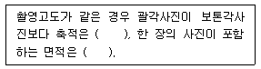
- 크고, 작다
- 크고, 크다
- 작고, 작다
- 작고, 크다
(정답률: 56%)
53. 항공사진의 특수 3점으로 옳게 짝지어진 것은?
- 지표점, 종접합점, 횡접합점
- 표정점, 연직점, 등각점
- 주점, 연직점, 등각점
- 부점, 주점, 연직점
(정답률: 65%)
54. 다음 중 항공사진측량에서 정의하는 산악지역으로 가장 적합한 것은?
- 산이 차지하는 면적이 한 사진의 60% 이상인 지역
- 산이 차지하는 면적이 한 사진의 70% 이상인 지역
- 사진에서 지형의 고저차가 촬영고도의 5% 이상인 지역
- 사진에서 지형의 고저차가 촬영고도의 10% 이상인 지역
(정답률: 58%)
55. 수치사진측량(digital photogrammetry)에서 상호표정의 자동화를 위해 요구되는 기법은?
- 디지타이징
- 좌표등록
- 영상정합
- 직접표정
(정답률: 45%)
56. 상호표정에 대한 설명으로 옳은 것은?
- x방향 시차를 소거하는 것
- y방향 시차를 소거하는 것
- z방향 시차를 소거하는 것
- x-y방향 시차를 소거하는 것
(정답률: 59%)
57. 수치정사영상(digital ortho image)을 제작하기 위해 직접적으로 필요한 자료가 아닌 것은?
- 수치지도
- 수치표고모델(DEM)
- 외부표정요소
- 촬영된 원래 영상
(정답률: 52%)
58. 특정 지점과 선분, 영역 등으로부터 어떤 거리 이하의 지역을 추출하는 지리정보분석방법은?
- Block 방법
- Buffering 방법
- Overlay 방법
- Query 방법
(정답률: 61%)
59. 사진판독의 순서를 바르게 나열한 것은?
- 촬영계획 → 촬영과 사진작성 → 판독기준의 작성 → 판독 → 현지조사 → 정리
- 현지조사 → 촬영계획 → 촬영과 사진작성 → 판독기준의 작성 → 판독 → 정리
- 판독기준의 작성 → 현지조사 → 촬영계획 → 촬영과 사진작성 → 판독 → 정리
- 판독기준의 작성 → 정리 → 현지조사 → 촬영계획 → 촬영과 사진작성 → 판독
(정답률: 44%)
60. 고층빌딩이 밀집된 도심지나 험준한 산악지역의 사진촬영 시 정확도를 높이기 위해서 가장 이상적인 카메라는?
- 초광각 카메라
- 보통각 카메라
- 광각 카메라
- 사각 카메라
(정답률: 52%)
4과목: 지리정보시스템
61. 다음 중 관계형 데이터베이스를 위한 대표적인 언어는?
- SQL
- DLL
- DLG
- COGO
(정답률: 68%)
62. 종이지도로부터 지리정보시스템(GIS) 데이터베이스에 저장될 자료를 생성하려 한다. 종이지도가 컴퓨터로 편집 가능한 수치영상으로 변환되는 단계는?
- 스캐닝
- 벡터 변환
- 구조화 편집
- 정위치 편집
(정답률: 56%)
63. 지리정보시스템(GIS)에서 데이터베이스관리시스템(DBMS)의 개념을 적용함으로써 얻어지는 특징이 아닌 것은?
- 서로 연관된 자료 간의 자동적인 갱신이 가능하다.
- 도형자료와 속성자료 간에 물리적으로 명확한 관계가 정의될 수 있다.
- 자료의 중앙제어가 가능하므로 자료의 보안성과 데이터베이스의 신뢰도를 높일 수 있다.
- 공간객체 간에 위치의 연관성을 구현하는데 위상관계의 정립이 불가능하다.
(정답률: 58%)
64. 다음 중 수치표고모델(DEM)의 활용분야와 가장 거리가 먼 것은?
- 건설
- 군사
- 생명과학
- 지구과학
(정답률: 63%)
65. 그림과 같은 A 벡터 레이어에서 B 벡터 레이어를 만들었다면 공간연산 기법으로 옳은 것은?
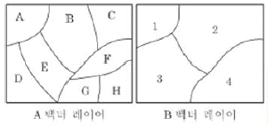
- reclassify
- dissolve
- intersection
- buffer
(정답률: 63%)
66. 지리정보시스템(GIS) 공간객체 타입 중 구조가 다른 것은?
- 선분(line segment)
- 연속선분(string)
- 격자셀(grid cell)
- 호(arc)
(정답률: 68%)
67. 수치지형도에서 얻을 수 없는 정보는?
- 표고 정보
- 도로 선형
- 수계 정보
- 필지 정보
(정답률: 56%)
68. 공간데이터베이스 내에 저장되는 객체가 갖는 정보로서 객체 간 공간상의 위치나 관계성을 좀 더 정량적으로 구현하기 위한 것은?
- 도형정보
- 속성정보
- 메타정보
- 위상정보
(정답률: 56%)
69. 다음 중 마케팅 및 상권분석과 같은 분야의 대표적인 GIS 활용사례라 할 수 있는 것은?
- LBS
- gCRM
- 내비게이션
- 포털 지도서비스
(정답률: 50%)
70. 지리정보시스템(GIS)에 대한 설명으로 옳지 않은 것은?
- 공간객체에 연계된 속성정보로 구축되었다.
- 저장, 갱신, 관리, 분석 및 출력이 가능하도록 구성된 체계이다.
- 공간적으로 배열된 형태의 자료를 처리한다.
- 일반적으로 숫자나 문자를 처리하는 정보시스템이다.
(정답률: 72%)
71. 구축된 GIS 데이터를 현장에서 확인하려고 한다. 둘레가 8km인 호수의 현황을 A, B 두 명이 확인하는 데 소요되는 최소 시간은? (단, A는 1분에 550m, B는 1분에 450m의 거리를 이동하며, 중복하여 확인하지 않는다.)
- 6분
- 8분
- 10분
- 12분
(정답률: 66%)
72. 격자구조에서 벡터구조로 변환하는 것을 벡터화라 한다. 일반적인 벡터화 과정을 순서대로 나열한 것은? (단, 필터링 : Filtering, 벡터화 단계 : Vectorization, 세선화 : Thinning, 후처리 단계 : Post processing)
- 필터링-세선화-벡터화 단계-후처리 단계
- 필터링-벡터화 단계-세선화-후처리 단계
- 후처리 단계-벡터화 단계-필터링-세선화
- 세선화-후처리 단계-벡터화 단계-필터링
(정답률: 53%)
73. 데이터베이스의 질의 중에 조인(Join) 연산에 관한 설명으로 틀린 것은? (문제 오류로 실제 시험에서는 모두 정답처리 되었습니다. 여기서는 1번을 누르면 정답 처리 됩니다.)
- 두 테이블의 공통 행에 있는 값에 기초하여 두 테이블이 연결된다.
- 단순 조인(simple join) 연산으로 테이블 A가 테이블 B에 연결되기 위해서는 테이블 A와 B의 관계가 1 : 1이어야만 한다.
- 조인(join)은 각 테이블의 행을 합쳐서 공통된 부분은 한 번만 나타내도록 테이블을 생성하는 것이다.
- 두 테이블의 공통 행의 속성명(attribute name)이 달라도 가능하다.
(정답률: 61%)
74. 두 격자자료의 입력값이 각각 1과 1일 때, 각 논리연산자 AND, OR, XOR에 의한 결과는? (단, AND, OR, XOR의 순서이고, 참일 때 1이고 거짓일 때 0이다.)
- 1-0-1
- 1-1-0
- 0-1-0
- 0-1-1
(정답률: 54%)
75. 다음 중 지리정보의 형태를 도형정보와 속성정보로 구분할 때 도로와 관련된 속성정보에 해당되지 않는 것은?
- 도로 형상
- 도로 길이
- 포장 재질
- 준공 일자
(정답률: 52%)
76. 필지 간의 위상관계 중 주어진 연속지적도에서 본인의 대지와 접해 있는 이웃 대지들의 정보를 얻기 위해 사용하는 위상관계는?
- 인접성(adjacency)
- 연결성(connectivity)
- 방향성(direction)
- 포함성(containment)
(정답률: 65%)
77. 특정 지도 객체나 사용자가 지정하는 지점으로부터 일정 거리 내에 존재하는 영역을 분석하여 표시하는 분석은?
- 지표 분석(surface analysis)
- 근접성 분석(proximity analysis)
- 버퍼링 분석(buffering analysis)
- 네트워크 분석(network analysis)
(정답률: 52%)
78. 격자 구조(Raster) 자료를 압축 저장하는 방법이 아닌 것은?
- Run-length code 기법
- Chain code 기법
- Quadtree 기법
- Polynomial 기법
(정답률: 57%)
79. 자료교환을 위한 형식에 대한 설명으로 옳은 것은?
- TIFF : 모든 수치지도가 지원하며 자료교환에 가장 많이 쓰는 형식
- DXF : Autodesk사에서 AutoCAD 자료의 호환을 위하여 개발한 형식
- SIF : 미국의 국가공간정보표준형식
- DLG : Intergraph사에서 개발한 자료교환형식
(정답률: 56%)
80. 지리정보시스템(GIS)이 CAD 시스템과 차별화되는 주요 기능은?
- 대용량의 그래픽 정보를 다룬다.
- 필요한 도형정보만을 추출할 수 있다.
- 다양한 축척으로 자료를 출력할 수 있다.
- 위상구조를 바탕으로 공간분석 능력을 갖추었다.
(정답률: 64%)
5과목: 측량학
81. 기포관의 감도가 30″인 레벨로 거리가 100m 떨어진 표척을 관측할 때 기포관의 눈금 1/2에 의한 수준오차는?
- 7.3mm
- 8.0mm
- 9.4mm
- 14.2mm
(정답률: 39%)
82. 각 측정기의 조정이 완전한 경우 성립조건이 아닌 것은?
- 시준선은 수평분도원과 직각이다.
- 시준선은 연직축과 직각을 이룬다.
- 수평축은 연직분도원과 직각이다.
- 연직축은 수평분도원과 직각이다.
(정답률: 31%)
83. 1 : 50,000 지도상에서 어느 산정으로부터 산기슭까지의 수평거리를 관측하니 46mm이었다. 산정의 표고가 454m, 산기슭의 표고가 12m일 때 이 사면의 경사는?
- 1/2.7
- 1/4.0
- 1/5.2
- 1/9.2
(정답률: 36%)
84. 폐합트래버스측량 결과가 표와 같을 때, 폐합트래버스의 면적은?
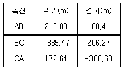
- 56,721.54m2
- 113,443.09m2
- 226,886.16m2
- 161,874.64m2
(정답률: 37%)
85. 정밀도와 정확도에 대한 설명으로 옳지 않은 것은?
- 정확도는 관측값이 목표값에 얼마나 접근하느냐의 정도에 따라 결정된다.
- 정밀도는 관측집단의 편차 크기에 따라 결정된다.
- 착오와 정오차가 없다면 정밀도를 정확도의 척도로 사용할 수 있다.
- 확률오차(ro)와 표준편차(mo) 사이에는 mo=±0.6745 ro의 관계가 있다.
(정답률: 39%)
86. 그림과 같이 관측된 거리를 최소제곱법으로 조정하기 위한 관측방정식을 행렬로 표시한 것으로 옳은 것은?
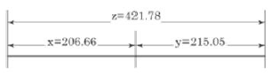
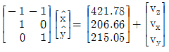
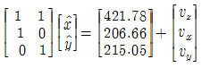
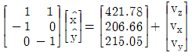
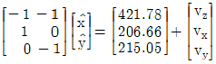
(정답률: 44%)
87. 삼각측량에서 삼각점의 위치 선정에 관한 주의사항으로 옳지 않은 것은?
- 각 점이 서로 잘 보여야 한다.
- 측점 수는 될 수 있는 대로 적게 한다.
- 계속해서 연결되는 작업에 편리하여야 한다.
- 삼각형은 될 수 있는 대로 직각삼각형으로 구성한다.
(정답률: 69%)
88. 수준측량에 있어서 AB 두 점간의 표고차를 구하기 위하여 (a), (b), (c) 코스로 측량한 결과가 표와 같다면 두 점간의 표고차는?
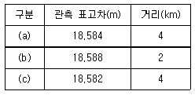
- 18.582m
- 18.584m
- 18.586m
- 18.588m
(정답률: 41%)
89. 각 관측에서 망원경을 정⋅반으로 관측하여 평균하여도 소거되지 않는 오차의 원인은?
- 시준축과 수평축이 직교하지 않는다.
- 연직축이 정확히 연직선에 있지 않다.
- 수평축이 연직축에 직교하지 않는다.
- 회전축에 대하여 망원경의 위치가 편심되어 있다.
(정답률: 35%)
90. 1 : 5,000 지형도의 주곡선 간격은 축척분모의 얼마로 하고 있는가?
- 1/1,000
- 1/2,000
- 1/2,500
- 1/3,000
(정답률: 30%)
91. 직사각형 토지의 가로, 세로를 줄자(tape)로 관측하여 37.8m와 28.9m를 얻었다. 이때 줄자의 공차가 30m에 대하여 4.7cm이었다면 이로 인하여 생길 수 있는 면적의 최대오차는? (단, 거리관측의 오차는 길이에 비례한다.)
- 0.003m2
- 0.03m2
- 2.74m2
- 3.4m2
(정답률: 41%)
92. 트래버스측량에 있어서 어느 방향선의 자북방위각을 측정하여 216°25′을 얻고 이 지점의 자침 편각이 서편 6°40′이었다면 이 방향선의 진방위각은?
- 116°55′
- 119°45′
- 209°45′
- 223°⑤′
(정답률: 47%)
93. 길이 50m인 줄자를 사용하여 1,250m를 관측할 경우 50m에 대한 관측오차가 ±5mm라면 전체 거리에서 발생하는 오차는?
- ±10mm
- ±20mm
- ±25mm
- ±30mm
(정답률: 46%)
94. 지형도에 의한 지형의 표시방법에 속하지 않는 것은?
- 횡단점법
- 등고선법
- 음영법
- 점고법
(정답률: 45%)
95. 대통령령으로 정하는 공공측량에 해당되지 않는 것은?
- 측량노선의 길이가 10킬로미터인 기준점측량
- 측량지역의 길이가 0.5킬로미터인 지하시설물측량
- 측량실시지역의 면적이 1제곱킬로미터인 평면측량
- 촬영지역 면적이 0.5제곱킬로미터인 측량용 사진촬영
(정답률: 27%)
96. 공간정보의 구축 및 관리에 관한 법률의 벌칙 중 3년 이하의 징역 또는 3000만원 이하의 벌금에 처하는 경우는?
- 속임수, 위력 등으로 측량업 또는 수로사업과 관련된 입찰의 공정성을 해친 자
- 성능검사를 부정하게 한 성능검사대행자
- 측량기준점표지를 이전 또는 훼손하거나 그 효용을 해치는 행위를 한 자
- 고의로 측량성과 또는 수로조사 성과를 사실과 다르게 한 자
(정답률: 60%)
97. 기본측량성과 검증기관의 인력 및 장비 보유 기준으로 옳은 것은?
- 특급기술자 1인 이상
- 중급기술자 2인 이상
- 도화기능사 1인 이상
- GPS 수신기(1급) : 3대 이상
(정답률: 49%)
98. 측량기준점을 크게 3가지로 구분할 때, 그 분류로 옳은 것은?
- 삼각점, 수준점, 지적점
- 위성기준점, 수준점, 삼각점
- 국가기준점, 공공기준점, 지적기준점
- 국가기준점, 공공기준점, 일반기준점
(정답률: 60%)
99. 다음 중 공공측량에 관한 설명으로 가장 적합한 것은?
- 토지를 지적공부에 등록하거나 지적공부에 등록된 경계점을 지상에 복원하기 위한 측량
- 모든 측량의 기초가 되는 공간정보를 제공하기 위하여 국토교통부장관이 실시하는 측량
- 공공의 이해 또는 안전과 밀접한 관련이 있는 측량으로서 대통령령으로 정하는 측량
- 순수 학술연구나 군사 활동을 위한 측량
(정답률: 54%)
100. 기본측량의 실시공고에서 포함되어야 하는 사항이 아닌 것은?
- 측량의 실시기간
- 측량의 실시금액
- 측량의 종류
- 측량의 목적
(정답률: 70%)